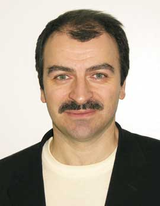

| В интервью редактору отдела аппаратных средств Александру Николову вице-президент компании Kraftway Ренат Юсупов затронул самый широкий круг вопросов - от тонкостей процессорных архитектур и технологических решений, применяемых в компании, до ее видения российского ИТ-рынка. |  |
"BYTE/Россия": Ренат, первый наш вопрос посвящен, естественно, серверным системам. Хотелось бы услышать Ваше мнение о том, как на данный момент складывается ситуация в сегменте серверов на платформе х86 и каковы перспективы ее 64-разрядных модификаций от компаний Intel и AMD - EM64T и AMD64 соответственно.
Ренат Юсупов: Давайте условимся так - есть официальная статистика, а есть мнение эксперта. Я готов излагать мнение эксперта, т. е. не буду комментировать какую-либо стороннюю статистику, а скажу, как представляется этот рынок на базе наших продаж.
Подавляющее преимущество на рынке имеет платформа Intel Xeon - вернее, не сама платформа, а ее процессорная архитектура. Такой расклад связан с тем, что Xeon - удачный процессор. Несмотря на огромный поток критики и адресованные Intel упреки в том, что это не серверная архитектура, а маркетинговая кампания по продвижению десктопной платформы, процессор получился очень достойный. А если совсем внимательно к нему приглядеться, то это, можно сказать, настоящий пост-RISC процессор внутри с набором CISC-команд снаружи. Если, допустим, взять тот же Opteron на платформе AMD64, то статистика (без которой, видимо, все же не обойтись) говорит, что в России не более 3% потребителей используют системы на базе этого решения. Все остальное - Xeon. Ну и, естественно, Itanium, доля которого невелика, думаю, чуть больше тех же 3% (в штучном исчислении). Здесь я имею в виду платформы среднего уровня - двух- и четырехпроцессорные, не системы high-end.
Чем хорош Xeon? Он хорош тем, что для него написано огромное количество ПО - все ведь разрабатывали его под платформу х86. То, что в 1999 г. Intel попыталась "сдвинуть" разработчиков в сторону Itanium, начинает приносить плоды только сейчас, да и то лишь для систем корпоративного уровня, а не начального или среднего.
"BYTE/Россия": Естественно - пока это чистый high-end.
Р. Ю.: Да, high-end в чистом виде, хотя Intel и декларирует, что уже больше 2000 приложений перенесено на эту платформу. Но, например, для Sun, насколько я знаю, существует около 12 тыс. приложений. Понятно, что под Itanium портируются только современные приложения, под Sun - все ПО, с учетом десятилетнего срока давности. А вот количество приложений для платформы х86 исчисляется десятками тысяч (правда, с учетом даже самых маленьких) - есть с чем сравнивать.
Возвращаясь к теме вопроса - понятно, что на платформе AMD64 решения, написанные для х86, тоже работают, однако тут существуют некоторые трудности. Во-первых, это новая архитектура, и пока она не имеет широкой поддержки производителей платформ: насколько я знаю, сейчас их выпускает Tyan, Nexcom - всего, по-моему, четыре или пять производителей в мире делают системы для AMD, т. е., в общем-то, очень ограниченный круг. Хорошо или плохо это решение, пока сказать не берусь - у нас стоит рабочая система на базе этой архитектуры, мы проводим ее тестирование, но как ее применять, пока не очень понимаем. С одной стороны, есть "железо", а с другой - маркетинг, и маркетинг подсказывает, что платформу AMD применять нам пока бессмысленно, хотя с точки зрения "железа" ничего плохого в ней нет, и на ней вполне можно собирать, например, высокопроизводительные кластеры.
Во-вторых, что касается Xeon, существует очень сильное маркетинговое давление Intel - корпорация держит весьма низкие цены на процессоры, и "слезть" с этой платформы практически невозможно. Да в принципе и слезать-то некуда, потому что все остальные конкуренты слабы как с точки зрения производства процессоров и малого предложения по платформам, так и с маркетинговой точки зрения. В этом плане Intel чистой воды монополист - если не по доле рынка, то по влиянию на умы и пользователей, и производителей всех уровней уж точно.
Тем не менее подвижки в этом секторе существуют - HP ввела в свои продуктовые линейки модели на базе Opteron, и теперь все основные производители, кроме, пожалуй, Dell, уже предлагают по нескольку AMD-моделей. Но пока особого бизнеса я здесь не вижу и думаю, что это скорее маркетинговые и финансовые игры между производителями, поставщиками и потребителями.
"BYTE/Россия": Ренат, тогда прокомментируйте, пожалуйста, в том же ключе отношение Kraftway к платформе Itanium.
Р. Ю.: Itanium - тут можно говорить много, в том числе и о том, какая это замечательная архитектура. Ведь с точки зрения идеологии это очень красивое решение - возложить все трудности, связанные с обработкой инструкций, на компилятор и не мучиться на уровне аппаратного исполнения кода. Однако не все так просто - архитектура прошла очень длинный путь, планка, поставленная Intel, весьма высока, и плоды ожидались еще в начале века - в 2000-2001 гг., а реальные результаты появились лишь сейчас. Мне кажется, перелом ситуации произошел только в последнее время, когда за счет более или менее выросшего количества нового ПО начинают продвигаться Itanium-решения в противовес системам RISC/Unix.
По моему мнению, в области тяжелых решений осталось только два лидера - IBM и Intel. С точки зрения микропроцессорных технологий они ушли очень далеко вперед от всех конкурентов. Концепция открытых архитектур - MIPS, отчасти Sun - хотя и существует, но на рынке она так и не стала явно популярной. Почему? Причина, на мой взгляд, довольно проста - когда нет права собственности на продукт и его можно легко клонировать, большим компаниям в принципе неинтересно разрабатывать такие решения, ведь его, условно говоря, любой может украсть, скопировать, выпустить точно такой же продукт под своей торговой маркой и продвигать его под зонтичной торговой маркой какого-нибудь большого "локомотива".
В случае с Itanium речи о клонировании, естественно, нет - речь идет об одной большой компании Intel, которая продвигает эту архитектуру в массы. Здесь иерархия жестко структурирована, и каждый занимает свое место. Вверху разработчик архитектуры и производитель процессоров - это Intel. Второй уровень - компании, которые производят наборы системных микросхем. Их уже несколько - Silicon Graphics, IBM, HP, Hitachi, NEC, Bull. К тому же уровню относятся транснациональные компании, использующие готовые решения под своей торговой маркой, например, Unisys; всего тех и других насчитывается, по-моему, девять или десять. Далее следуют OEM-производители, такие, как, в частности, Kraftway. Этих компаний тоже не более десятка в мире, и они, в общем-то, и проталкивают идеологию больших систем, фактически выступая в роли системных интеграторов. Естественно, здесь я говорю о решениях high-end.
Когда мы входили на этот рынок, у нас был выбор - с кем работать, мы вели переговоры и с Unisys, и с Hitachi, и с Bull, и с SGI. Даже с NEC вели переговоры. В итоге остановились на контракте с Bull, а через год был анонсирован контракт с Silicon Graphics, фактически он уже подписан. Почему именно эти две компании - думаю, абсолютно понятно. Во-первых, они распозиционированы по разным нишам: Bull - это решения уровня центров обработки данных крупных компаний, т. е. уровня ERP-систем, CRM и т. д., а Silicon Graphics мы брали как основу для высокопроизводительных расчетных систем, на которой хорошо строить вычислительные кластеры. В первом случае речь идет о работе с неструктурированными запросами к корпоративным БД, во втором - о решении задач, хорошо поддающихся распараллеливанию. Silicon Graphics позволяет строить эффективные и недорогие системы для вычислений, что на решениях Bull сделать гораздо труднее. Все наши расчеты это подтверждают - ведь мы же представляем себе не только техническую реализацию, но и ценовую политику обеих компаний, поскольку имеем с ними очень тесные взаимоотношения. В случае больших систем Silicon Graphics для нас оказывается более эффективным и более выгодным решением, чем системы Bull, хотя с последними мы работаем дольше и они для нас привычнее.
"BYTE/Россия": Хорошо, а что Вы скажете относительно RISC/Unix-решений и ситуации на этом рынке?
Р. Ю.: В этом секторе фактически остался один производитель - IBM. Они, конечно, молодцы - активно развивают Linux-сообщество вокруг POWER, оптимизировали эту ОС под свою архитектуру, ведь раньше там работала только их собственная Unix-система. Фактически шаги по продвижению POWER, осуществляемые IBM в рамках многомиллиардной программы WebSphere, во многом повторяют работу Intel в отношении Itanium. IBM по силам пройти этот путь и стать реальным конкурентом Intel - в ближайшей перспективе видно, что соперничать будут именно эти две компании. Можно, конечно, сказать, что что-то разрабатывает и Sun, но, насколько я понимаю, компания переключилась на Opteron и теперь везде рассказывает о своих будущих проектах - о разработке новых архитектур, которые будут представлены в 2007 г. На самом деле за два года вполне можно уйти с рынка, поэтому я не слишком верю в реальность таких проектов. Ближе к 2007 г. ситуация станет понятнее, но, честно говоря, я думаю, про Sun начнут забывать и очень быстро заменять их платформу на Itanium - рынок не прощает ухода с него на несколько лет.
"BYTE/Россия": Пожалуй, в 2007-м им придется стартовать практически с нуля.
Р. Ю.: Вы правы - на самом деле будет очень тяжело опять выйти на рынок со своей торговой маркой, с каким-то новым процессором, очень много придется вкладывать. Может быть, и получится. Можно еще говорить о японских компаниях, но это весьма специфический и закрытый для внешнего потребителя рынок.
Чем кончится противостояние IBM и Intel, сказать сложно. Я не берусь предсказать победу какой-либо из архитектур; вероятнее всего, соперничество будет продолжаться и не кончится победой ни одной из компаний. Отмечу, что для рынка это очень хорошо - когда нет монополии, и существуют два очень крупных производителя, предлагающих фактически конкурентные архитектуры с близкими подходами, то у таких компаний, как Kraftway, есть хорошая база для того, чтобы работать либо на той, либо на другой платформе. В конце концов, если в случае каких-либо экстраординарных событий платформа Itanium потеряет для нас свою привлекательность, мы можем направить свои интеллектуальные ресурсы на продвижение решений IBM.
Более чем за два года работы с архитектурой Itanium мы накопили огромный опыт интегрирования больших систем, и это на самом деле бесценный опыт, так что фактически нам сейчас уже не важно, с чем именно работать - то ли с POWER5, Unix-системами, Linux и DB2, то ли со связкой Linux - Oracle на Itanium, то ли с решениями Microsoft на той же платформе Itanium или х86. Практический опыт, накопленный в процессе тонкой настройки связок "железка" - ОС - СУБД - приложение, оказывается применим на любых платформах, так как возникающие проблемы в общем случае везде примерно одинаковы. В реальности все ошибки можно разделить на несколько классов, и если эти классы как-то систематизировать - а мы сейчас у себя накапливаем внутреннюю базу знаний, - это сильно поможет ускорить процесс интеграции любых решений практически на любой технике. Поэтому мы и Opteron'а не очень-то боимся - начнем активно делать высокопроизводительные вычислительные системы, тогда и Opteron, может быть, появится. А пока он нам не очень интересен - сам этот рынок довольно мал.
"BYTE/Россия": Завершая первую часть беседы, попрошу Вас кратко прокомментировать результаты компании за 2004 г. и озвучить планы Kraftway на 2005-й.
Р. Ю.: Результаты 2004 г. - к сожалению, не помню точную статистику, но объем продаж в штуках - около 8000 серверов. Это мои предварительные прикидки на конец декабря. Но для нас гораздо интереснее тот факт, что внутри компании изменилось соотношение между госсектором и внешним рынком - если раньше госсектор занимал примерно 95%, то теперь около 20% приходится на корпоративных заказчиков. Планы на 2005 год - довести этот показатель до 30%.
"BYTE/Россия": Эти цифры относятся к какой платформе?
Р. Ю.: К х86 Xeon. По Itanium другой расклад - практически все серверы идут в госсектор. Это и понятно - частные компании более консервативны в принятии решений, касающихся смены архитектуры. Они считают деньги жестче и ресурс систем типа мэйнфрейм вырабатывают очень долго - несмотря на все утверждения, что время жизни технологий ограничено примерно десятью годами, во многих случаях на службе остаются VAX-системы тридцатилетней давности, и они неплохо справляются с возложенными на них задачами. А потребители Itanium - это пока государственные учреждения. Они более подвижны в этом вопросе и во многом только сейчас начинают серьезное техническое переоснащение - по моим ощущениям, у них еще первая волна автоматизации не кончилась. Насыщение персональными компьютерами завершилось, теперь идет насыщение сквозными системами автоматизации, и оно-то как раз сопровождается крупными закупками RISC- и Itanium-решений.
Эта волна пошла года два назад, и сейчас тенденция активно набирает обороты. А корпоративные заказчики подключатся чуть позже, когда дорастут их потребности и когда всем станет ясно, что на Itanium работают и Grid-технологии, и кластерные технологии, да и СУБД отлично себя чувствуют. А пока они ждут и используют обкатанные технологии х86, тем более что Itanium-решения - это весьма недешевое удовольствие. Ведь до недавнего момента системы уровня high-end на российском рынке предлагали всего три компании - IBM, HP и Sun, и только с приходом Kraftway появилась реальная ценовая конкуренция.
Вместе с тем, накопив большой опыт работы с госструктурами, мы начинаем понимать, что сами по себе "железки" никому не интересны, их нужно продвигать вместе с инфраструктурой. Посему у нас появились терминальные решения; мы также сотрудничаем с Oracle - у нас появились их Grid-системы и решения класса File Safe и внедрения Real Application Clusters на больших системах. Кроме того, у нас теперь есть решения на Linux (Red Hat и SUSE), мы отрабатываем решения для мониторинга и резервного копирования и т. д. И на корпоративный рынок мы пойдем не с отдельными "железками", а, скажем так, с готовыми решениями проблем.
Фактически у нас меняется идеология - если в 2004 г. Kraftway снаружи выглядела как "железячная" компания, и этот год прошел под знаком накопления опыта и пробы сил, то 2005-й у нас, скорее всего, будет годом предложения рецептов для решения проблем в различных секторах экономики, в различных бизнесах. С этой точки зрения, я думаю, мы далеко ушли от наших российских конкурентов - мы вложили много денег в "железо", в персонал, в обучение, и это дает большой эффект уже сейчас: практически любые, даже самые сложные задачи решаются у нас не недели, а часы, максимум дни. Например, заставить нормально взаимодействовать SuSE Linux 8 и Hitachi TrueCopy, которая с ним по умолчанию не работает, означает как минимум переделки в ядре Linux - это тот уровень, на котором мы сейчас работаем, и фактически мы копаем до самого нижнего уровня аппаратных и программных решений.
Касательно объемов - по Itanium на следующий год мы ожидаем рост не выше 30%, больше компании пока не переварить, но, основываясь на результатах предыдущих лет, я пока не вижу причин для взрывного роста. По х86 рассчитываем на 10-11 тыс. серверов, т. е. на уровень хорошей европейской компании, достаточно крупной, которых в мире по пальцам можно пересчитать.
"BYTE/Россия": Относительно контрактов и соглашений с партнерами - как прошел 2004-й и каковы планы на 2005 г.?
Р. Ю.: Прежде всего назову уже упомянутое выше соглашение с SGI - это конец 2004 - начало 2005 г. Год назад было заключено соглашение с Bull. В принципе, вполне возможно, что у нас появятся еще третий и даже четвертый вендор по большим системам, и мы достаточно жестко распозиционируем всех по нишам. Это вполне возможно, хотя я не говорю об этом как о свершившемся факте. Названия компаний пока по понятным причинам озвучить не могу. Скорее всего, это будут недорогие универсальные решения среднего уровня - восемь процессоров, так как и Bull, и SGI - это гораздо более тяжелые и дорогие системы.
"BYTE/Россия": Поговорим теперь о корпоративных ПК, а также о системах для дома - как обстоят дела у Kraftway в этом секторе?
Р. Ю.: Компания Kraftway немного перепозиционировалась - теперь мы производим не только корпоративные ПК. Примерно в начале февраля у нас появятся два жестко "развязанных" модельных ряда - отдельный для индивидуальных потребителей и отдельный - для корпоративного применения. Чем они будут различаться? Во-первых, мы принципиально поменяли дизайн корпусов - пользовательская линейка будет иметь однотипный повторяющийся дизайн трех форм-факторов: маленький настольный корпус, мини-башня и среднеразмерная или обычная башня. Они все будут иметь одинаковый внешний вид, специально разработанный для этого рынка. Идеология продвижения будет следующая - мы теперь будем предлагать некоторое фиксированное количество моделей. Это значит, что мы изучаем спрос, смотрим, какие технологии и свойства ПК важны для торговых сетей и потребителей, и пытаемся попасть в пик спроса, предлагая фиксированные модели. За устойчивость этого модельного ряда мы будем довольно жестко бороться.
Такой подход кардинально отличается от предыдущего опыта, когда потребитель заказывал и получал любую свою фантазию, заказать можно было практически все что угодно. Сейчас в секторе систем для потребителей все будет совсем не так. Зато мы гарантируем покупателю, что он получает некий фиксированный набор потребительских качеств, приобретая ту или иную модель. Допустим, лет пять назад модемный доступ - это было здорово, сейчас здорово стало ADSL. Технологии явно разные, но с точки зрения адекватного времени потребительского уровня они примерно идентичны, и стоимость готовых решений примерно одинакова. То же самое будет и у нас - человек покупает в любой момент времени одну из семи доступных моделей, допустим, номер пять, и получает то, что соответствует среднему на сегодняшний день уровню.
Идеология совсем простая, линейная, без всяких изысков, но потребитель-то сейчас не очень искушенный. Это раньше все покупали технологии, а сейчас на самом деле покупают красивый дизайн, отсутствие головной боли, удобство работы, эргономику, и никого особо не интересует, что там внутри. Даже Intel, переходя в обозначениях процессоров с частот на индексы, тоже пытается следовать этой идеологии. Вы получаете то, что хотите, и не важно, какая у процессора тактовая частота или объем кэша: если взять процессор с индексом 700 и процессор с индексом 750, последний будет определенно лучше, хотя у него может быть ниже тактовая частота, но зато кэша внутри больше. Пользователи в большинстве своем не понимают, как это влияет на работу разных приложений, а мы понимаем и поэтому гарантируем потребителю нашей продукции, что он получит наилучшее соотношение цена/производительность/функциональные возможности. Такова в общих чертах наша идеология на этом рынке на этот год. Попробуем за год сломать устоявшиеся традиции. Наши оценки объемов продаж на 2005 г. в этом сегменте - от 60 до 80 тыс. машин.
И еще одно, последнее замечание по этому вопросу - мы планируем активно использовать корпуса форм-фактора microATX с двумя пятидюймовыми отсеками вместо четырех, как у обычного ATX. При этом в них можно использовать процессоры даже самых старших индексов - мы проводили очень жесткие испытания, и по термопакету они держат до 3,8 ГГц. Кроме того, мы используем бесшумные вентиляторы - в старших моделях с увеличенным диаметром 120 мм вместо 90 - и в блоках питания, и в системах охлаждения, за счет чего значительно повышается комфортность работы с этими компьютерами. А наверху линейки в секторе пользовательских систем будет медиацентр - система совершенно другого дизайна, ничего похожего на обычный компьютер.
"BYTE/Россия": В принципе вполне логично - всем уже хочется, чтобы компьютер перешел в категорию обычных бытовых приборов.
Р. Ю.: Согласен. Мы и попытаемся это сделать - облегчим выбор, и люди будут выбирать компьютер, как, например, холодильник - по размеру, весу, дизайну, по эргономике, удобству работы и т. д. Забудьте про технологии, мы уже обо всем подумали и, поверьте, сделали это хорошо - мы компания-эксперт, давно работаем на этом рынке.
"BYTE/Россия": А на базе какой платформы будут выпускаться эти решения?
Р. Ю.: В потребительском секторе будет только платформа Intel, и вот почему. Во все новые поколения процессоров Intel включила технологии, позволяющие управлять их энергопотреблением, - этого в нормально работающем виде категорически нет ни у кого другого. То, что взято из ноутбучной линейки Centrino, Intel очень успешно интегрировала в обычные процессоры для настольных ПК, благодаря чему удается спроектировать хорошо сбалансированную с точки зрения выделения тепла систему. Получаются высокопроизводительные машины, при этом совсем не "горячие" и соответственно не требующие мощных, порой совсем уж избыточных (наподобие водяного охлаждения) систем отвода тепла. В этом направлении Intel очень сильно продвинулась, AMD немножечко отстает, хотя они тоже делают замечательные процессоры. С точки зрения производительности их решения сравнимы, а вот с технологиями окружения - то же самое охлаждение или чувствительность к питанию - у AMD существенно хуже, чем у Intel. А потребительский рынок очень капризен - один раз ошибешься, и тебя навсегда затопчут в грязь, никогда не отмоешься. И мы действительно опасаемся за свою репутацию, поэтому подходим к этому рынку с двойной осторожностью.
Теперь о корпоративном секторе. Здесь, кроме решения проблем, мы продаем еще и технологии - эти потребители гораздо лучше подкованы в техническом плане и покупают не дизайн или эргономику, хотя и это тоже. Вот тут-то мы и предлагаем выбор - хотите диски Serial ATA, а хотите - IDE, хотите память DDR2 либо DDR и т. д. Причем еще и с объяснениями - что, зачем, почему, как повлияет, как модернизировать. Выбор действительно очень широкий, но он осознанный - мы делаем конфигураторы с экспертизой, думаю, лучшие в России, которые не только позволяют заказчикам подбирать комплектующие для своих машин согласно потребностям, но и автоматически подстраивают параметры компьютера, используя накопленный нами и перенесенный в эту систему опыт. Мы гарантируем, что все, выбранное покупателем, будет нормально совместно работать, т. е. даем ему спокойствие и уверенность. Человек приходит к нам на сайт, выбирает и конфигурирует свою систему, а внутри есть наша заранее подготовленная экспертиза, которая не позволит ему, даже если он будет делать самые невероятные вещи, собрать неработающую конфигурацию. И в этой ситуации человеку легко и комфортно - ведь в конфигураторах у многих компаний есть только линейный набор комплектующих и никакой проверки взаимной совместимости - фактически просто интерфейс к прайс-листу. У нас же, кроме интерфейса, есть еще огромный набор логики и правил - целая система баланса ресурсов, фактически экспертная система в чистом виде. Это первый момент.
Второй момент - соотношение платформ. Вот здесь как раз у нас присутствует AMD, так как мы четко понимаем, что есть разные потребители и о вкусах не спорят. Расклад примерно следующий - около 6000 систем на платформе AMD против примерно 190 тыс. систем на платформе Intel, т. е. где-то 3%. На самом деле это хорошее соотношение. Таким образом, платформа AMD нами также охвачена, в том числе и экспертизой, но с ней мы работаем очень осторожно - у AMD есть ряд серьезных трудностей. Например, мы столкнулись с тем, что ядра, изготовленные на разных заводах, работают по-разному. Кроме того, мы не используем наборы микросхем VIA - слишком много в них недоработок. Что же касается реального производства, то в планах на 2005 г. у нас стоит около 250 тыс. машин во всех сегментах рынка.
"BYTE/Россия": Остается только уточнить перспективы терминальных решений Kraftway.
Р. Ю.: Терминальные решения у нас появились в связи с ростом интереса у заказчиков к большим серверным системам. Это очевидно, так как сами по себе терминалы никому не нужны, они нужны только в связке с решением. Терминалы мы предлагаем трех типов, вернее, тип один - платформа VIA в двух вариациях (533 МГц и 1 ГГц), но используются три разных ОС - версия Linux, разработанная и поддерживаемая усилиями специалистов Kraftway и гибко настраиваемая под требования заказчика; Windows CE версий 4 и 5, которую мы также можем довольно гибко адаптировать, и Citrix-клиент. С последним дела обстоят несколько хуже, так как Citrix - закрытая проприетарная система. Правда, сейчас мы находимся на стадии заключения с ними соглашения, после подписания которого получим полный набор необходимых инструментов, для того чтобы предоставлять тот же уровень сервиса, что по Linux и Windows.
"BYTE/Россия": Какому-то из этих вариантов отдается особое предпочтение?
Р. Ю.: Нет. Linux от Kraftway бесплатна, причем не условно, а полностью - мы же продаем ее с нашей системой, с нашей гарантией и поддержкой, а при желании заказчика можем даже доработать под его задачи. Windows CE пользуется такой же поддержкой, только пользователи платят лицензионный сбор за ядро - около 16 долл. С Citrix, наверное, тоже будет какая-то плата за ядро, но поддержку и доработку будут выполнять наши специалисты. Сейчас, после года обкатки, мы активно внедряем это решение в паспортно-визовой службе Москвы - около 1500 машин.
"BYTE/Россия": Поговорим теперь о системах хранения данных - ведь это неотъемлемая часть корпоративных систем, без которой деловая жизнь не представляется возможной.
Р. Ю.: Каждый производитель больших систем норовит "протолкнуть" нам свое решение - Bull предлагает свои системы хранения, Silicon Graphics - свои. У всех этих компаний есть свои решения, и достаточно неплохие, за исключением, пожалуй, Bull - у нас сложилось неважное впечатление о результатах работы их базового тайваньского производителя, и сейчас мы отказываемся от этой продукции. С Silicon Graphics дела обстоят достаточно средне.
Наиболее интересна для нас Hitachi Data Systems, причем по одной простой причине - компания наладила достаточно хороший сервис в России, у них здесь есть склад, и мы, согласно договоренности, фактически можем его использовать для нужд своих сервисных служб. Естественно, мы у них учимся, разбираемся, как работать с их оборудованием и обслуживать его, мы даже авторизовались на их услуги сервисного обслуживания, потому что продавать такие системы без сервиса вообще бессмысленно. Кроме того, Hitachi для нас - это стандарт де-факто, у нас очень давние взаимоотношения с этой компанией, еще в 96-м мы начали работать с их оборудованием, довольно глубоко разобрались в их архитектуре, кстати, одними из первых среди отечественных компаний. Правда, тогда большой дружбы не получилось, потому что рынка не было, а сейчас в прошлом году дело дошло до заключения OEM-контракта.
Контракт действительно серьезный - подобного уровня соглашения есть еще только у HP и Sun. У нас условия чуть-чуть иные, один пункт в нем просто исключается - фактически мы не имеем права продавать оборудование HDS под своей торговой маркой, возможен только ко-лэйблинг, а все остальное стандартно, доступ к техподдержке, ко всем ресурсам Hitachi у нас такой же.
Кто еще? Есть еще EMC, фактически на рынке ведь два лидера - EMC и Hitachi...
"BYTE/Россия": IBM активно пытается пробиться в лидеры…
Р. Ю.: Я ведь неспроста начал с сервиса. Я пока не знаю, как IBM предоставляет сервис по сетевым системам хранения, - может быть, хорошо, а может быть, и не очень, я не в курсе.
"BYTE/Россия": У IBM сейчас запущена новая программа, особенно после выпуска DS6000 и DS8000. Они предлагают интегрированный сервис по всему миру, этот сервис входит в стоимость готового решения и действует на срок четыре года.
Р. Ю.: Да, я читал об этом. У нас то же самое, но три года. Однако, видите ли, в чем проблема - интегрированный сервис никто не покупает, покупают сервис отечественный. По одной простой причине - конфиденциальности хранимых данных. Представьте, например, что министерство по налогам и сборам приобретает подобную систему, а она в процессе эксплуатации будет периодически соединяться с удаленным зарубежным центром для диагностики - да никто никогда такого в принципе не позволит. С Hitachi мы договорились - если у заказчика возникает какая-то проблема и их специалистам нужна техническая информация, данные идут через электронную почту, а не по прямому соединению. Делает ли так IBM, я не знаю, но это в, частности, один из критериев, почему мы стали работать с Hitachi. Ведь все критические решения, будь то военные или государственные системы, всегда закрытые, и никто не даст к ним доступа иностранным компаниям. На этом рынке IBM с их сервисом может действовать только через какого-то локального партнера, который этот сервис ретранслирует через себя и соответственно гарантирует сохранность конфиденциальных данных.
Как бы то ни было, но исторически так сложилось, что мы выбрали Hitachi, и менять что-либо не видим смысла. Если что-то у нас не будет получаться, вполне возможно появление контрактов с другими поставщиками, но пока у нас для этого нет причин. HDS очень активна, недавно они выпустили новую систему 9520, которой очень хорошо "подогрели" рынок, и теперь с ее помощью мы фактически захватываем нижнюю часть среднего ценового сегмента. По объемам поставок этих систем - на 2005 г. мы предполагаем около 3 млн евро, в 2004 г. было чуть больше миллиона. Это довольно большой объем. Кроме того, с ростом корпоративного рынка и нашего присутствия в этом сегменте мы очень активно будем продвигать и более тяжелые системы хранения данных.
Коротко о ленточных системах хранения данных. Ленточные системы - это на самом деле комплексные решения, фактически это сервер резервного копирования. У нас отработано готовое решение в виде единого комплекса, состоящего из сервера, ленточной библиотеки Sony LIB-81/LIB-82, базирующейся на технологии AIT-3, и ПО ARCserv от Computer Associates. Оно поддерживает объем от 1 до 4 Тбайт, и пока мы работаем только в этом сегменте. Фактически мы хотим сделать это решение для себя стандартом де-факто - оно отлично работает и при этом достаточно недорогое, попадает в ценовой диапазон от 6 до 12 тыс. долл. В 2004 г. мы поставили несколько десятков таких систем, в 2005-м - думаю, это число перевалит за сотню, может быть, и за две.
Кроме ПО ARCserv, мы рассматриваем другие возможные предложения, в частности, продукты Veritas, Legato от EMC и Microsoft Storage Server, но пока используем то, что удобно в администрировании, доступно, хорошо поддерживается и т. д., - сейчас для ARCserv альтернативы у нас нет, да и для AIT тоже. Библиотеки более высокого уровня мы пока не продавали - просто не было спроса. Мы готовы с ними работать, но через некоторое время, пока для нас 4 Тбайт - это предел.
"BYTE/Россия": А как обстоят дела с другими технологиями записи - вы их поддерживаете?
Р. Ю.: Мы ставим библиотеки Ultrium от IBM, но только по требованию заказчика, как свои стандартные решения мы их пока не предлагаем. Вот, собственно, и все о системах хранения данных - особых прорывов здесь мы не ожидаем, но в связи с тем, что мы меняем идеологию своего присутствия на этом рынке, в принципе они возможны.
"BYTE/Россия": Поговорим о программном обеспечении - об операционных системах и о системном ПО. Естественно, в первую очередь хочется узнать о взаимоотношениях Kraftway и Microsoft. Каким вашей компании представляется прошедший год в плане сотрудничества в продвижении ОС семейства Windows, и каковы перспективы в наступившем году?
Р. Ю.: Контракт и наш статус "Платинового партнера" у Microsoft, думаю, не нуждаются в особых комментариях. В прошлом году мы поставили около сотни тысяч их систем - совсем чуть-чуть недотянули до круглой цифры. И это много, реально много. Вся техника, которая пойдет в пользовательский сектор, будет продаваться с предустановленным ПО Microsoft - это Windows XP Home или Media Center Edition. Только самая младшая модель пойдет с Linux, и это сознательный шаг. Не секрет, что у нас очень многие покупают самый дешевый ПК и идут на рынок за пиратской версией Windows, и такие пользователи никогда не купят предустановленную версию Windows. Вот на них и рассчитана младшая модель с Linux. Захотят - будут пользовать эту систему, и мы готовы снабдить ее необходимыми прикладными программами, по крайней мере офисными, не захотят - их воля. Таким образом мы не стимулируем пиратство, но и не хотим потерять сегмент рынка, который жестко сориентирован не на Microsoft. Пускай это будет головная боль Microsoft, а не наша.
Что касается серверного ПО, на системах с одним, двумя или четырьмя процессорами явное преимущество имеют продукты Microsoft - удобно, просто, легко администрируется, выпускаются обновления и т. д. В системах с числом процессоров от восьми и выше начинаются проблемы. Например, если собирать кластер из 16-процессорных систем, то понадобится ревизия Datacenter ОС Windows Server 2003. Купить Datacenter - это невероятно сложная задача, пройти всю процедуру даже очень крупной компании непросто. В то же время есть альтернативные решения в виде систем Red Hat и SUSE Linux, которые замечательно справляются с этой задачей. Скажу даже больше - на Silicon Graphics есть только Linux, а Microsoft нет. Поэтому в 2005 г. мы однозначно станем OEM-партнерами Red Hat и скорее всего OEM-партнерами Novell по SUSE Linux, хотя с Novell мы и так уже партнеры. Будем предлагать решения в связке - Itanium плюс Linux, к сожалению для Microsoft. Но дело тут в их политике - вот когда они поменяют свои представления о том, как надо продавать enterprise-системы, вот тогда мы и будем с удовольствием применять их решения.
"BYTE/Россия": Немного поподробнее о Linux - как это выглядит в исполнении Kraftway?
Р. Ю.: Партнеров для корпоративного рынка - Red Hat и Novell (SUSE Linux) - я уже назвал. Кроме того, у нас очень сильная команда по Linux. Для терминальных и потребительских систем мы фактически сами разрабатываем дистрибутив Linux, на уровне внесения изменений в ядро и "прикручивания" дополнительных приложений и сервисов. Можно назвать его Kraftway Linux.
"BYTE/Россия": А как обстоят дела с Unix-системами? Имеются в виду не только "фирменные" системы, но и открытые решения, в частности, ветка BSD, весьма популярная в телекоммуникационной среде, - это ведь тоже клон Unix.
Р. Ю.: Мы делаем под них заказные работы, поскольку у нас есть клиенты, использующие FreeBSD. Мы проверяем, исправляем ошибки - один раз у нас была некая несовместимость в BIOS, не запускались какие-то сервисы, мы разобрались, в чем проблема, сообщили Intel, они сделали для нас специальную ревизию BIOS, после чего наш клиент решил свои проблемы с этими платформами и FreeBSD раз и навсегда. Надо сказать, что занимаемся мы этим не очень охотно, так как это отвлекает ресурсы, а отдачи практически не дает.
"BYTE/Россия": А что можно сказать про Sun Solaris на платформе х86? Ведь она становится открытой системой, по крайней мере с десятой версии.
Р. Ю.: У нас есть Linux, так что это нам не очень нужно. Если сейчас заняться Solaris, то фактически мы начнем продвигать решения Sun, а это наш прямой конкурент на корпоративном рынке. Мы не можем одновременно и продвигать компанию, и конкурировать с ней. Естественно, потребности заказчика для нас приоритетны, и если нас попросят, мы будем поддерживать любые решения в рамках конкретного проекта, но при этом будем долго убеждать клиента в пагубности таких смешений.
"BYTE/Россия": Кратко о системном ПО - что вы поставляете и почему?
Р. Ю.: Computer Associates Unicenter, HP OpenView и Altiris. Сейчас мы выбираем и планируем к середине 2005 г. остановиться на одном из трех этих решений. Упомяну еще Microsoft System Management Server - его мы тоже оцениваем, так что, возможно, на выходе будет два решения. Распозиционируем их по рынку - на системы с числом процессоров от 1 до 4 хорошо "ложится" Microsoft SMS, а в старших продуктах будет работать, скажем, Unicenter или Altiris.
"BYTE/Россия": Последняя по времени, но отнюдь не по значимости тема нашего разговора - сервисное обслуживание. Каковы сегодня сервисные программы Kraftway, предлагаемые клиентам на период послепродажного гарантийного обслуживания? Что их ждет по окончании этого срока?
Р. Ю.: Сервис как класс появился у нас в конце 2003 г. - была организована компания Kraftway Service, и весь 2004 г. прошел в изучении рынка, понимании того, как на нем зарабатывать, что нужно рынку. В этом году, я думаю, мы начнем зарабатывать на этом довольно серьезные деньги.
Сервис у нас делится на четыре составляющие. Во-первых, это расширенные сервисные услуги к новому продукту, приобретаемому в Kraftway, - обслуживание на территории заказчика, дополнительные годы гарантии и так далее. Сервисных услуг по этой категории было продано в 2004 г. - фактически за несколько месяцев - на сумму около 300 тыс. долл. Затем идет абонементное обслуживание заказчика - допустим, компания купила у нас технику, но у нее, кроме наших решений, есть еще и оборудование сторонних поставщиков. Мы заключаем с ней контракт и берем на обслуживание всю эту технику. В Москве уже есть такой прецедент - компания "М.Видео".
Третий вид - модернизация техники, это тоже сервисная услуга. Мы создали сервисный портал, к которому имеют доступ наши региональные сервисные центры. Введя серийный номер компьютера, они получают полный набор сведений о его комплектации и могут заказать для него апгрейд, а мы, со своей стороны, обладая необходимой экспертизой, помогаем им в этом. Все изменения заносятся в базу и учитываются в дальнейшем. Такая система учета позволяет нам развернуть этот сервис по всей России, и необязательно даже самим, а силами наших авторизованных сервисных центров.
И последнее, четвертое - предложение дополнительных услуг: установка программно-аппаратных комплексов по требованию заказчика, их настройка и конфигурирование, создание систем под ключ и т. д. Опять же приведу в пример паспортно-визовую службу - здесь мы сделали все от начала до конца. Специально для этих целей у нас есть команда из пяти высококлассных специалистов, а это на самом деле очень много, так как они в совершенстве знают решения Oracle, ОС Windows и Linux, ПО управления Unicenter и Intel Server Management и умеют настраивать их руками, т. е. это не только теоретики, но и практики. Они также вполне компетентны в вопросах настройки аппаратной части (системы хранения, коммутационная среда, настройка резервирования). С помощью этой команды мы планируем в 2005 г. запустить систему сервиса для ключевых корпоративных заказчиков в режиме 24х7. Фактически это означает, что инженеры будут выделены под отдельного заказчика, и каждый такой клиент получит гарантированный, с дублированием (основной и резервный специалисты) уровень обслуживания. Если занят основной инженер, подключается запасной, если и он занят, включается диспетчерская служба и переводит клиента на свободного сервисного работника.
В середине года мы расширим сервисный портал, выложим туда обновления системного и аппаратного ПО, всяческие руководства, ответы на часто задаваемые вопросы, методички и другую справочную информацию. Но портал будет закрытый, доступ к нему будут иметь только наши сервисные центры и партнеры.
Кстати, сервис у нас отделен от продаж - сервисные компании существуют отдельно от региональных партнеров по продажам. Хотя формально они могут быть в одном лице, мы требуем, чтобы были специально выделенные для сервиса помещения и отдельные, сертифицированные нами инженеры. Авторизацию мы проводим каждый год. В 2004 г. авторизовали 54 компании, за ближайшие полгода должны авторизовать еще 80, а всего у нас 130 сервисных центров. Все авторизуются по разным программам, рассчитанным на разные классы оборудования, и зачастую в одном городе у нас бывает несколько сервисных партнеров, из которых пользователь может выбирать.
"BYTE/Россия": Если можно, несколько слов о компании Kraftway Service.
Р. Ю.: Численность персонала на сегодня - более сорока человек. Что касается направления работ, первое - это логистика, связанная с региональной сервисной программой (пакеты договоров, ЗИПы, обслуживание запросов, диспетчерская служба и т. д.). Второе направление - московский сервисный центр. Это выездные инженеры, не те пять, о которых речь шла выше, а просто обычные инженеры, которые обслуживают простые контракты, например, упомянутый уже контракт с "М.Видео". В их ведении находится расширенное сервисное обслуживание на территории заказчика, как гарантийное, так и в рамках дополнительных сервисных пакетов. Третье - подразделение экономистов. Это те, кто фактически придумывает сервисные пакеты. Они сканируют рынок, смотрят, как обстоят дела у других компаний, формируют цены и состав услуг в сервисных пакетах. Следующее подразделение и соответственно вид деятельности - центр технического обслуживания по работе с контрольно-кассовыми машинами. Там семь специалистов, сертифицированных налоговыми органами.
Еще одно направление деятельности - ремонт оборудования сторонних компаний. Сейчас речь идет о сотрудничестве с Gigabyte и Foxconn - будем ремонтировать системные платы и видеокарты их производства. У нас есть для этого специальное оборудование и грамотные инженеры, которые уже делают такие работы для нас, но после заключения контрактов это станет отдельным видом бизнеса - группа будет обслуживать не только Kraftway, но и внешние компании. И последнее - те самые инженеры, занимающиеся полуинтеграторскими задачами.
А вот продажей сервиса будет заниматься уже не Kraftway Service, а наши структуры. Сам же процесс продаж, наверное, будет организован как продажа сервисных сертификатов с регистрацией заказчика у нас. Сертификаты будут циркулировать на открытом рынке и перепродаваться нашими партнерами, при этом сервис будет оказываться по стандартам Kraftway, и мы гарантируем, что если вдруг какой-то наш партнерский сервисный центр оказался неспособен решить проблему, мы оказываем услугу напрямую или перенаправляем ее другому ближайшему центру обслуживания. Мы стремимся к тому, чтобы сервис Kraftway был везде единообразным, - уровень оказываемых услуг должен быть одинаковым везде по всей России, и мы это гарантируем тем, что сертификат будет выдан компанией Kraftway. В некотором роде мы будем эмитировать сервисный вексель Kraftway. По объемам могу сказать, что за 2005 г. мы планируем от 3 до 5 млн долл. заработать на сервисе (это без услуг интеграции).
"BYTE/Россия": Что касается развертывания сервиса для оборудования сторонних производителей, в 2005 г. эта услуга будет как-то расширяться? Появятся ли новые контрагенты?
Р. Ю.: Конечно. Собственно говоря, мы ставим перед нашими продавцами задачу активно продавать этот пакет услуг. У нас есть вся необходимая инфраструктура и персонал, так почему бы не поддерживать и других производителей? Это же бизнес. Хотя нашим прямым конкурентам таких услуг предлагать пока не будем, попытаемся сначала сделать это со своей техникой и той техникой, которая уже находится в эксплуатации у заказчиков, а поддержка чужой продаваемой техники - это вопрос будущего. Хотя эту идею мы тоже не отбрасываем - например, мы будем продавать профессиональный сервис для Hitachi, и вполне возможно, что клиент Hitachi, покупая оборудование у какого-то другого дистрибьютора, купит сервис на это оборудование у нас.
"BYTE/Россия": И в завершение нашей встречи расскажите хотя бы в общих чертах о проектах, осуществленных компанией за последний год, и о планах в этой области. Были ли какие-то интересные решения с технологической точки зрения?
Р. Ю.: С технологической точки зрения это прежде всего Grid-решения на базе ключевых технологий Oracle под Linux, которые мы отрабатываем пока у себя. Затем высокопроизводительные вычисления на базе архитектуры Intel Itanium с интерконнектом InfiniBand. Следующее, что мы сделаем, - наверное, все-таки попадем в рейтинг TPC в 2005 г. Пропустим наши системы на базе решений Bull и Silicon Graphics через тесты TPC, пригласим аудиторов из Америки, они все проверят, а затем мы опубликуем полученные результаты. Это в общем-то довольно интересно, потому что никто из российских производителей в TPC до сих пор не участвовал. Дальше - мы разворачиваем демоцентр CA Unicenter на базе нашего центра компетенции. Будет ли такое же с Altiris, не знаю, но попробуем. Еще одно направление - мы будем очень активно разбираться с виртуализацией вычислительных мощностей. Собственно говоря, мы уже разобрались и понимаем, как это работает, а сейчас попытаемся сделать некое условное базовое решение, на котором сами изучим все тонкие места, например, как идет перераспределение ресурсов при быстром раздувании задач.
"BYTE/Россия": А на чьих решениях будет основываться эта система?
Р. Ю.: Это аппаратное решение.
"BYTE/Россия": Имелось в виду, что некоторые поставщики предлагают системы виртуализации, базирующиеся на программных решениях, встроенных в их ОС, - например, в той же Sun Solaris 10.
Р. Ю.: Это адаптивные технологии, и это то, что двигают Fujitsu и HP. Мы к этому подходим немножко иначе. Конечно, решения из разряда адаптивных есть и на системах Bull, но мы их пока не пробовали. В общем можно сказать, что на 2005 г. стоит задача отработать весь спектр решений как динамической, так и статической виртуализации. Вот, пожалуй, и все по части технологических новинок.
"BYTE/Россия": Ренат, спасибо Вам за интересную беседу, и до новых встреч в нашем "Клубе экспертов".